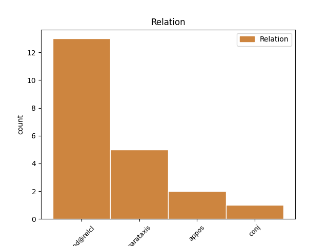
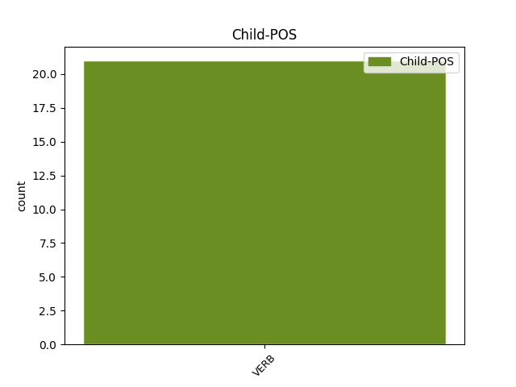

Distribution of features within this leaf



Agreement Rules sorted by frequency.
- When the dependent token is the modifer(mod@relcl) of the head token, and the head token is NOUN and the dependent token is VERB.
1 Кроме _ _ _ _ 0 _ _ _
2 Эйфелевой _ _ _ _ 0 _ _ _
3 башни башня NOUN _ Animacy=Inan|Case=Gen|Gender=Fem|Number=Sing 0 _ _ _
4 , _ _ _ _ 0 _ _ _
5 которую _ _ _ _ 0 _ _ _
6 не _ _ _ _ 0 _ _ _
7 очень _ _ _ _ 0 _ _ _
8 ожидала ожидать VERB _ Aspect=Imp|Gender=Fem|Mood=Ind|Number=Sing|Tense=Past|VerbForm=Fin|Voice=Act 3 mod@relcl _ _
9 там _ _ _ _ 0 _ _ _
10 застать _ _ _ _ 0 _ _ _
11 . _ _ _ _ 0 _ _ _
1 О _ _ _ _ 0 _ _ _
2 , _ _ _ _ 0 _ _ _
3 час час NOUN NOUN Animacy=Inan|Case=Nom|Gender=Masc|Number=Sing 0 _ _ _
4 , _ _ _ _ 0 _ _ _
5 едва _ _ _ _ 0 _ _ _
6 пропет пропеть VERB VERB Aspect=Perf|Gender=Masc|Number=Sing|Tense=Past|Variant=Short|VerbForm=Part|Voice=Pass 3 parataxis _ _
7 тропарь _ _ _ _ 0 _ _ _
8 Христос _ _ _ _ 0 _ _ _
9 Воскресе _ _ _ _ 0 _ _ _
10 . _ _ _ _ 0 _ _ _
1 О _ _ _ _ 0 _ _ _
2 , _ _ _ _ 0 _ _ _
3 час _ _ _ _ 0 _ _ _
4 , _ _ _ _ 0 _ _ _
5 едва _ _ _ _ 0 _ _ _
6 пропет _ _ _ _ 0 _ _ _
7 тропарь тропарь NOUN NOUN Animacy=Inan|Case=Nom|Gender=Masc|Number=Sing 0 _ _ _
8 Христос _ _ _ _ 0 _ _ _
9 Воскресе воскреснуть VERB VERB Aspect=Perf|Gender=Masc|Mood=Ind|Number=Sing|Tense=Past|VerbForm=Fin|Voice=Act 7 appos _ SpaceAfter=No
10 . _ _ _ _ 0 _ _ _
Disagree Examples:
1 Их _ _ _ _ 0 _ _ _
2 отличает _ _ _ _ 0 _ _ _
3 харизма _ _ _ _ 0 _ _ _
4 , _ _ _ _ 0 _ _ _
5 приятная _ _ _ _ 0 _ _ _
6 внешность _ _ _ _ 0 _ _ _
7 , _ _ _ _ 0 _ _ _
8 живой _ _ _ _ 0 _ _ _
9 аналитический _ _ _ _ 0 _ _ _
10 ум _ _ _ _ 0 _ _ _
11 , _ _ _ _ 0 _ _ _
12 хорошее _ _ _ _ 0 _ _ _
13 воспитание _ _ _ _ 0 _ _ _
14 и _ _ _ _ 0 _ _ _
15 манеры манера NOUN _ Animacy=Inan|Case=Nom|Gender=Fem|Number=Plur 0 _ _ _
16 , _ _ _ _ 0 _ _ _
17 за _ _ _ _ 0 _ _ _
18 которыми _ _ _ _ 0 _ _ _
19 всегда _ _ _ _ 0 _ _ _
20 спрятан спрятать VERB _ Aspect=Perf|Gender=Masc|Number=Sing|Tense=Past|Variant=Short|VerbForm=Part|Voice=Pass 15 mod@relcl _ _
21 сильный _ _ _ _ 0 _ _ _
22 взгляд _ _ _ _ 0 _ _ _
23 , _ _ _ _ 0 _ _ _
24 в _ _ _ _ 0 _ _ _
25 котором _ _ _ _ 0 _ _ _
26 едва _ _ _ _ 0 _ _ _
27 просматривается _ _ _ _ 0 _ _ _
28 небольшая _ _ _ _ 0 _ _ _
29 грусть _ _ _ _ 0 _ _ _
30 . _ _ _ _ 0 _ _ _
1 4 _ _ _ _ 0 _ _ _
2 декабря декабрь NOUN _ Animacy=Inan|Case=Gen|Gender=Masc|Number=Sing 0 _ _ _
3 ( _ _ _ _ 0 _ _ _
4 вс _ _ _ _ 0 _ _ _
5 ) _ _ _ _ 0 _ _ _
6 в _ _ _ _ 0 _ _ _
7 16:00 _ _ _ _ 0 _ _ _
8 - _ _ _ _ 0 _ _ _
9 мест _ _ _ _ 0 _ _ _
10 почти _ _ _ _ 0 _ _ _
11 не _ _ _ _ 0 _ _ _
12 осталось остаться VERB _ Aspect=Perf|Gender=Neut|Mood=Ind|Number=Sing|Tense=Past|VerbForm=Fin|Voice=Mid 2 parataxis _ _
13 !!! _ _ _ _ 0 _ _ _
1 кому _ _ _ _ 0 _ _ _
2 китаец _ _ _ _ 0 _ _ _
3 или _ _ _ _ 0 _ _ _
4 мних мних NOUN NOUN Animacy=Anim|Case=Nom|Gender=Masc|Number=Sing 0 _ _ _
5 а _ _ _ _ 0 _ _ _
6 мне _ _ _ _ 0 _ _ _
7 плевать _ _ _ _ 0 _ _ _
8 хотелось хотеться VERB VERB Aspect=Imp|Gender=Neut|Mood=Ind|Number=Sing|Tense=Past|VerbForm=Fin|Voice=Mid 4 conj _ _
9 в _ _ _ _ 0 _ _ _
10 н _ _ _ _ 0 _ _ _
11 их _ _ _ _ 0 _ _ _
12 и _ _ _ _ 0 _ _ _
13 так _ _ _ _ 0 _ _ _
14 зигзагом _ _ _ _ 0 _ _ _
15 кровь _ _ _ _ 0 _ _ _
16 лелась _ _ _ _ 0 _ _ _
17 на _ _ _ _ 0 _ _ _
18 сало _ _ _ _ 0 _ _ _
19 и _ _ _ _ 0 _ _ _
20 на _ _ _ _ 0 _ _ _
21 тусклый _ _ _ _ 0 _ _ _
22 глаз _ _ _ _ 0 _ _ _
23 людей _ _ _ _ 0 _ _ _
24 лежащих _ _ _ _ 0 _ _ _
25 на _ _ _ _ 0 _ _ _
26 земле _ _ _ _ 0 _ _ _
1 дуновение дуновение NOUN NOUN Animacy=Inan|Case=Nom|Gender=Neut|Number=Sing 0 _ _ _
2 сосны _ _ _ _ 0 _ _ _
3 -- _ _ _ _ 0 _ _ _
4 и _ _ _ _ 0 _ _ _
5 пронесся пронестись VERB VERB Aspect=Perf|Gender=Masc|Mood=Ind|Number=Sing|Tense=Past|VerbForm=Fin|Voice=Mid 1 parataxis _ _
6 запах _ _ _ _ 0 _ _ _
7 хвои _ _ _ _ 0 _ _ _
8 над _ _ _ _ 0 _ _ _
9 молящейся _ _ _ _ 0 _ _ _
10 травою _ _ _ _ 0 _ _ _
11 , _ _ _ _ 0 _ _ _
12 заблестели _ _ _ _ 0 _ _ _
13 рыбы _ _ _ _ 0 _ _ _
14 - _ _ _ _ 0 _ _ _
15 сны _ _ _ _ 0 _ _ _
16 . _ _ _ _ 0 _ _ _
1 Увы _ _ _ _ 0 _ _ _
2 , _ _ _ _ 0 _ _ _
3 эти _ _ _ _ 0 _ _ _
4 триста _ _ _ _ 0 _ _ _
5 листов _ _ _ _ 0 _ _ _
6 беллетристики _ _ _ _ 0 _ _ _
7 праздной _ _ _ _ 0 _ _ _
8 разлетятся _ _ _ _ 0 _ _ _
9 -- _ _ _ _ 0 _ _ _
10 но _ _ _ _ 0 _ _ _
11 у _ _ _ _ 0 _ _ _
12 настоящей _ _ _ _ 0 _ _ _
13 листвы _ _ _ _ 0 _ _ _
14 есть _ _ _ _ 0 _ _ _
15 куда _ _ _ _ 0 _ _ _
16 упадать _ _ _ _ 0 _ _ _
17 , _ _ _ _ 0 _ _ _
18 есть _ _ _ _ 0 _ _ _
19 земля _ _ _ _ 0 _ _ _
20 , _ _ _ _ 0 _ _ _
21 есть _ _ _ _ 0 _ _ _
22 Россия _ _ _ _ 0 _ _ _
23 , _ _ _ _ 0 _ _ _
24 есть _ _ _ _ 0 _ _ _
25 тропа _ _ _ _ 0 _ _ _
26 вся _ _ _ _ 0 _ _ _
27 в _ _ _ _ 0 _ _ _
28 лиловой _ _ _ _ 0 _ _ _
29 кленовой _ _ _ _ 0 _ _ _
30 крови _ _ _ _ 0 _ _ _
31 , _ _ _ _ 0 _ _ _
32 есть _ _ _ _ 0 _ _ _
33 порог _ _ _ _ 0 _ _ _
34 , _ _ _ _ 0 _ _ _
35 где _ _ _ _ 0 _ _ _
36 слоятся _ _ _ _ 0 _ _ _
37 тузы _ _ _ _ 0 _ _ _
38 золотые _ _ _ _ 0 _ _ _
39 , _ _ _ _ 0 _ _ _
40 есть _ _ _ _ 0 _ _ _
41 канавы _ _ _ _ 0 _ _ _
42 -- _ _ _ _ 0 _ _ _
43 а _ _ _ _ 0 _ _ _
44 бедные _ _ _ _ 0 _ _ _
45 книги _ _ _ _ 0 _ _ _
46 твои _ _ _ _ 0 _ _ _
47 , _ _ _ _ 0 _ _ _
48 без _ _ _ _ 0 _ _ _
49 земли _ _ _ _ 0 _ _ _
50 , _ _ _ _ 0 _ _ _
51 без _ _ _ _ 0 _ _ _
52 тропы _ _ _ _ 0 _ _ _
53 , _ _ _ _ 0 _ _ _
54 без _ _ _ _ 0 _ _ _
55 канав _ _ _ _ 0 _ _ _
56 , _ _ _ _ 0 _ _ _
57 без _ _ _ _ 0 _ _ _
58 порога _ _ _ _ 0 _ _ _
59 , _ _ _ _ 0 _ _ _
60 опадут _ _ _ _ 0 _ _ _
61 в _ _ _ _ 0 _ _ _
62 пустоте пустота NOUN NOUN Animacy=Inan|Case=Loc|Gender=Fem|Number=Sing 0 _ _ _
63 , _ _ _ _ 0 _ _ _
64 где _ _ _ _ 0 _ _ _
65 ты _ _ _ _ 0 _ _ _
66 вырастил вырастить VERB VERB Aspect=Perf|Gender=Masc|Mood=Ind|Number=Sing|Tense=Past|VerbForm=Fin|Voice=Act 62 mod@relcl _ _
67 ветвь _ _ _ _ 0 _ _ _
68 , _ _ _ _ 0 _ _ _
69 как _ _ _ _ 0 _ _ _
70 базарный _ _ _ _ 0 _ _ _
71 факир _ _ _ _ 0 _ _ _
72 , _ _ _ _ 0 _ _ _
73 то _ _ _ _ 0 _ _ _
74 есть _ _ _ _ 0 _ _ _
75 не _ _ _ _ 0 _ _ _
76 без _ _ _ _ 0 _ _ _
77 подлога _ _ _ _ 0 _ _ _
78 , _ _ _ _ 0 _ _ _
79 и _ _ _ _ 0 _ _ _
80 недолго _ _ _ _ 0 _ _ _
81 ей _ _ _ _ 0 _ _ _
82 в _ _ _ _ 0 _ _ _
83 дымчатом _ _ _ _ 0 _ _ _
84 воздухе _ _ _ _ 0 _ _ _
85 цвесть _ _ _ _ 0 _ _ _
86 . _ _ _ _ 0 _ _ _